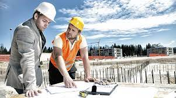
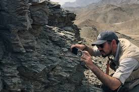

The Master of Engineering in Renewable Energy is a 1.5-year full-time program designed to impart comprehensive knowledge on renewable energy system design,
analysis, and implementation. It aims to enhance engineers' technical and analytical skills for careers in renewable energy and associated fields. Specific
objectives include clear communication, evaluation of environmental and economic impacts, risk assessment, infrastructure design, system optimization, problem-solving
using emerging technologies, fostering innovation and entrepreneurship, theoretical understanding, software proficiency, research skills, and career readiness.
Graduates can pursue roles such as project engineers, energy analysts, policy experts, system maintenance engineers, researchers, consultants, entrepreneurs, and
strategists in various sectors emphasizing renewable energy. The program aligns with the country's growing renewable energy initiatives, ensuring promising career
opportunities for its graduates.
Masters in Construction Management

The Master's in Construction Management is a 1.5-year full-time program aimed at equipping students with theoretical and practical knowledge to tackle contemporary
challenges in the construction industry. It covers essential concepts and methodologies in construction project management, catering to students from diverse
backgrounds such as engineering, architecture, and real estate. Aligned with international standards like the Project Management Body of Knowledge (PMBoK),
the program prepares project managers to navigate time, resource, quality, and regulatory constraints effectively. It suits both full-time students and working
professionals, offering flexibility for part-time study with the option to exit after each semester.
B.E. in Civil Engineering
The Bachelor of Engineering in Civil Engineering is a comprehensive four-year program designed to prepare graduates for employment across various sectors of engineering.
Graduates can pursue roles in Civil Service, Corporations, and the Private sector as Structural, Water, Environmental, Geotechnical, Project, Construction, Roads and
Transportation, or Survey Engineers. The program emphasizes innovation in course development to attract students from diverse backgrounds, fosters critical thinking
and professionalism, and supports career advancement through higher education. Graduates will possess the skills to formulate project proposals, design structures,
manage construction, conduct surveys, perform feasibility studies, manage projects, and adapt to new technologies.
B.E. in Electrical Engineering
The Bachelor of Engineering in Electrical Engineering is a four-year full-time program aimed at training engineers to meet the needs of Bhutan. It aims to increase
the number of qualified engineers, supporting private sector growth and job creation. The curriculum is tailored to Bhutan's engineering demands, ensuring graduates
are prepared for roles in Civil Service, Corporations, and the Private sector. The institute prioritizes innovation in course development to attract students of diverse
academic backgrounds, foster versatility in thinking, provide breadth across engineering disciplines, and emphasize professionalism and problem-solving skills.
Graduates can pursue further education with a Master's degree. Electrical engineering offers exciting opportunities for students to understand and shape modern
technology's future. The program emphasizes practical experience through site visits, focusing on analysis, design, and implementation of electrical components and
systems.
B.E. in Electronics & Communication Engineering
The Bachelor of Engineering in Electronics and Communication Engineering, established in June 2009 as the third undergraduate program at the College under the Royal
University of Bhutan, is a four-year full-time program. By 2021, 158 students had graduated from the program.
The program aims to develop skills in engineering design, communication, and construction, providing theoretical knowledge and practical skills to solve real-life
problems in electronics and communication engineering. Graduates are expected to possess employability skills to meet educational and industrial needs, contributing to
societal improvement.
The curriculum includes specialized courses in Electronics and Circuit Devices, Analog and Digital Communication, Antenna and Wave Propagation, and Microprocessors
and Embedded Systems. Students also learn programming languages like C, Java, and FPGA programming. The college's well-equipped laboratories facilitate hands-on
learning in mobile communication technologies and circuitry design.
Bachelor of Architecture
The Bachelor of Architecture, launched in July 2014 with two faculty members and 14 students, has grown to include 7 faculty members (3 female, 4 male) and
95 students (53 male, 42 female). Supported by various college departments and external experts, the program emphasizes CA-based modules, with final projects
assessed by both external experts and college faculty to ensure quality.
Students participate in week-long study tours across Bhutan and day-long tours for case studies, gaining practical experience. A six-month internship in the fourth
year allows students to work independently post-graduation. Beyond teaching, the program contributes to infrastructure planning and design, including projects like the
RENEW center in Pekarzhing and campus extensions.
Program objectives include providing excellence in architectural education, preserving Bhutanese architectural identity, preparing students for professional
qualification or higher education, and developing critical thinking and teamwork skills. Graduates must register with the Bhutan Institute of Architects and
Construction Development Board to practice as registered architects in Bhutan.
Bachelor of Engineering in Engineering Geology

The Bachelor of Engineering in Engineering Geology is a four-year program aimed at providing essential knowledge and skills crucial for investigating, planning,
and executing construction projects. Graduates will be equipped to assess geological factors and make recommendations for project implementation, covering topics
such as landform interpretation, geophysical processes, and site conditions.